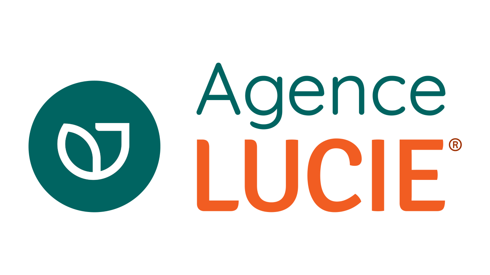
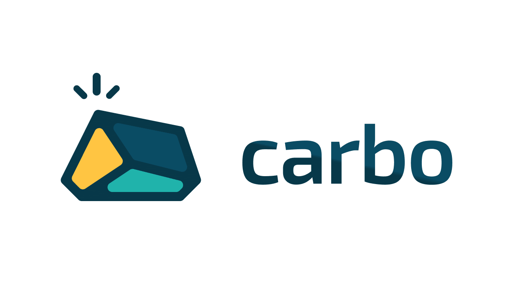
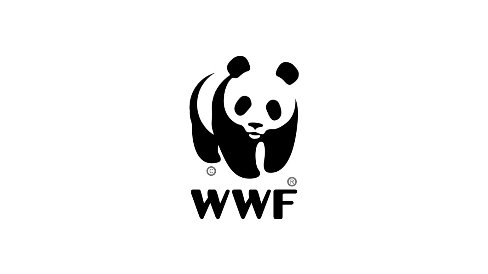
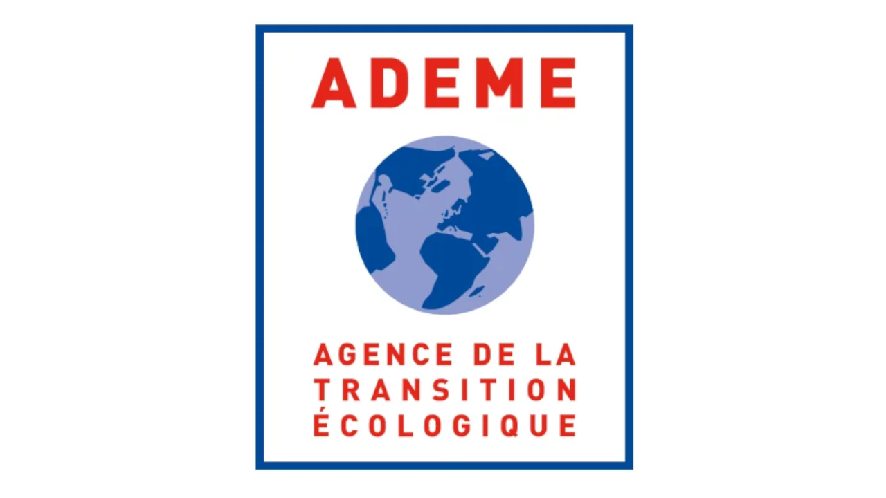
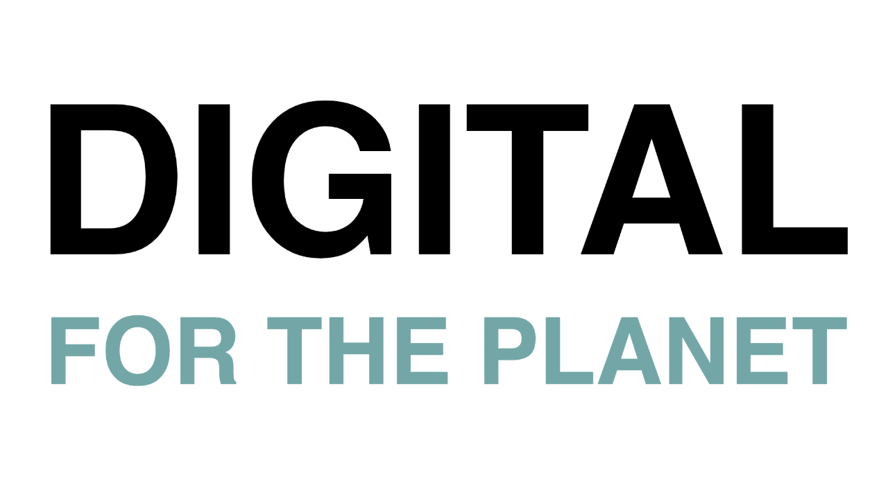
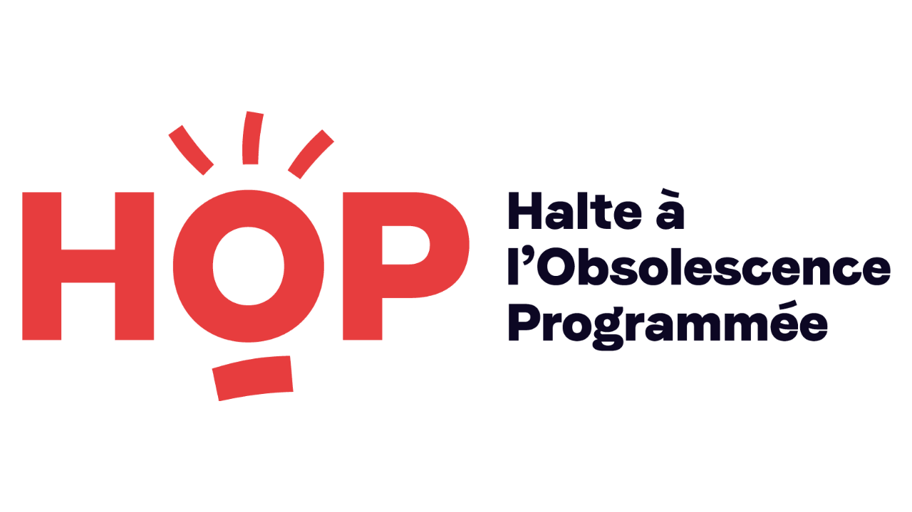
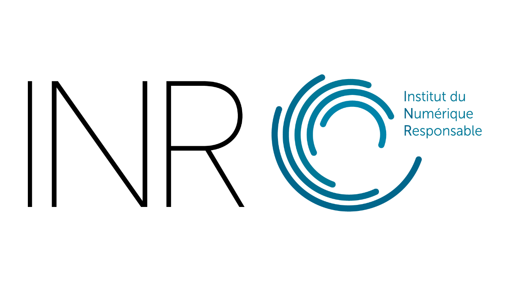
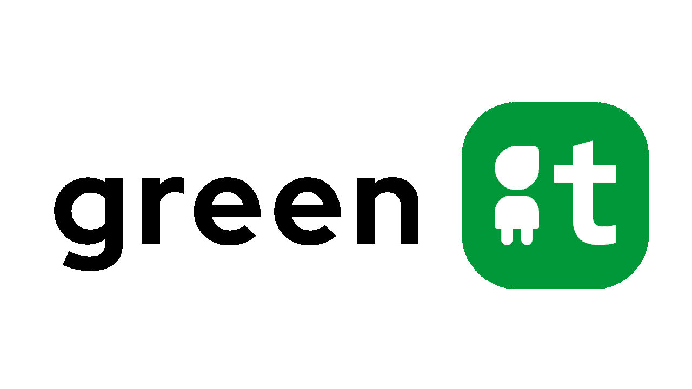
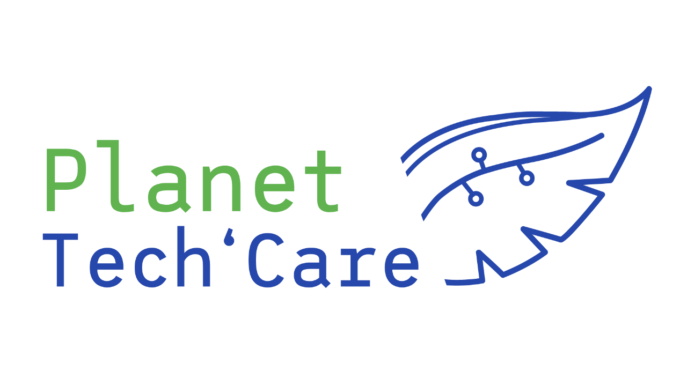

Le "Numérique Responsable"
Le numérique responsable est « l’ensemble des technologies de l’information et de la communication dont l’empreinte économique, écologique, sociale et sociétale a été volontairement réduite et / ou qui aident l’humanité à atteindre les objectifs du développement durable». (Green IT)
La transition numérique bouleverse le monde professionnel comme celui des particuliers. Leviers de croissance économique pour les entreprises, les services numériques séduisent de plus en plus. En effet, les usages du digital ne cessent d’augmenter, au point d’avoir un impact considérable sur le climat. L’inclusion du numérique responsable dans les pratiques des entreprises devient donc nécessaire afin de réduire l'empreinte carbone et ainsi œuvrer pour le développement durable.
Le numérique responsable : une démarche environnementale, éthique et sociale
L’association GreenIT.fr a inventé en 2008 l’expression « sobriété numérique ». Elle désigne « la démarche qui conçoit des services numériques plus responsables et modère ses usages numériques quotidiens ».
Depuis 2014, on utilise plus souvent l’expression « Numérique responsable » (« Green IT » en anglais). Cette dernière désigne « l’ensemble des technologies de l’information et de la communication dont l’empreinte économique, écologique, sociale et sociétale a été volontairement réduite et / ou qui aident l’humanité à atteindre les objectifs du développement durable».
En effet, cette définition ne s’intéresse pas seulement à l’impact environnemental des services numériques. Elle intègre également leur impact économique et sociale à la démarche.
Le label « Numérique Responsable »
Construit par l’Institut du Numérique Responsable en partenariat avec le Ministère de la Transition Ecologique, l’ADEME et WWF. Il s’appuie sur 4 axes et 14 principes d’action du label Numérique Responsable.
En 2021, le référentiel du label Numérique Responsable a été refondu afin de devenir un outil toujours plus complet et concret pour les organisations qui souhaitent développer leur démarche NR. Le référentiel NR propose désormais deux déclinaisons sectorielles à destination des ESN (Entreprises de Services du Numérique) et des collectivités.
Passer au vert permet une totale transparence sur les pratiques des entreprises. Cela constitue un avantage concurrentiel majeur afin d’attirer des clients comme de nouveaux employés. En effet, de plus en plus d'entreprises privées et d’organisations du secteur public préfèrent collaborer avec des entreprises respectueuses de l’environnement.
Focus sur nos alliés responsables
Comment s’engager dans le numérique responsable ? Il nous paraîssait important, voire nécessaire, de présenter les associations ou ONG qui luttent chaque jour pour un numérique plus responsable. Ce sont ces acteurs qui ouvrent les voies, mettent en lumière les problèmes, proposent des solutions, des actions et des lois. Cette liste est non-exhaustive et la France est peuplée d’acteurs du numérique responsable, plus ou moins connus.








